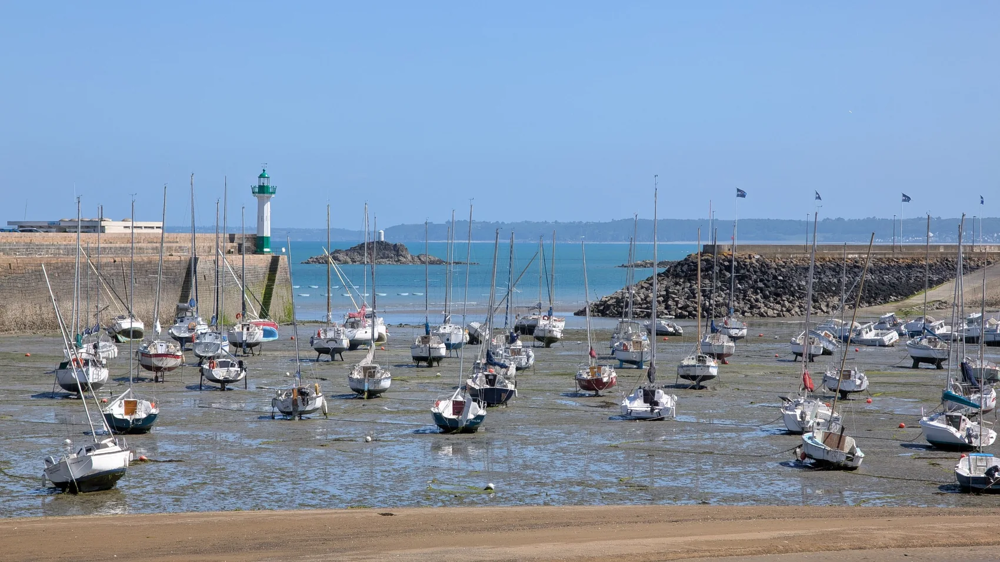
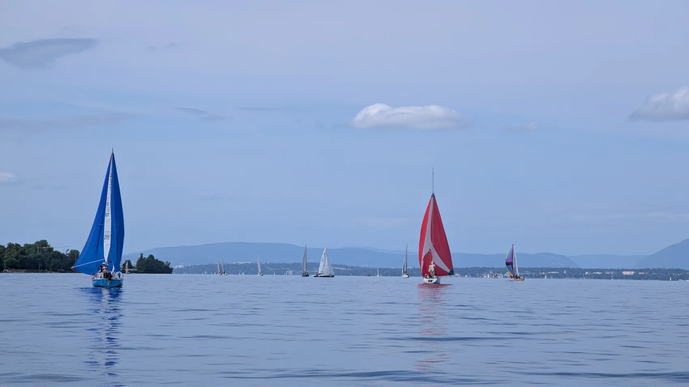
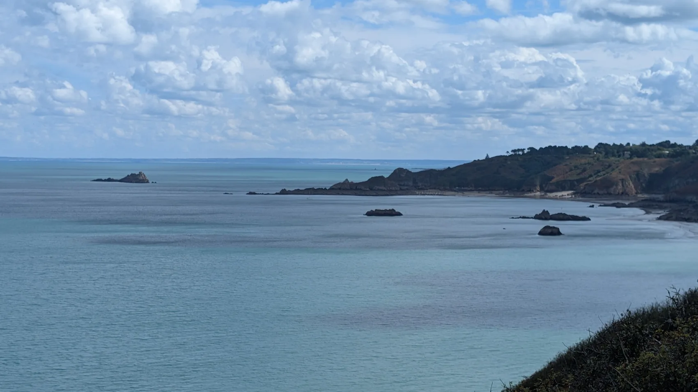
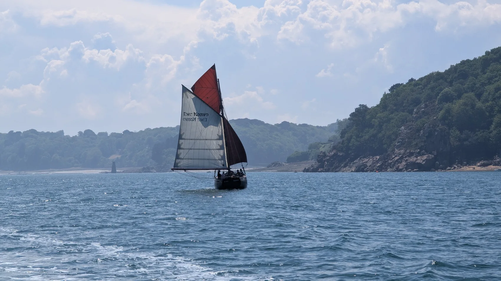

MANŒUVRES · PORT
Arriver, repartir, s’amarrer
Approches de ponton, vent, courant, marche arrière, amarrages : répétez les gestes sur l’eau pour gagner en sérénité.
Parler de mes besoins
Manœuvres de port, météo, électronique, navigation de nuit : Julien vous accompagne pour progresser concrètement sur l’eau.
Débutant, nouveau propriétaire ou plaisancier souhaitant retrouver ses automatismes, vous progressez à votre rythme avec Julien.

Approches de ponton, vent, courant, marche arrière, amarrages : répétez les gestes sur l’eau pour gagner en sérénité.
Parler de mes besoins
Comprendre les prévisions, utiliser l’électronique de bord et approfondir les bons réflexes, jusqu’à la navigation nocturne.
Préparer une séance
Une séance utile, c’est une séance que l’on peut réutiliser seul.
Julien privilégie les situations concrètes et l’explication des gestes, avec un programme défini selon votre niveau et votre bateau. La formation peut être centrée sur un point précis ou couvrir plusieurs sujets.
Construire ma formationL’objectif : vous sentir plus à l’aise, pas seulement accumuler des notions.
Ce que vous savez déjà, ce qui vous bloque et les situations à travailler.
Des exercices concrets, des explications et des répétitions adaptées.
Des conseils utilisables lors de vos prochaines sorties.
Décrivez vos objectifs à Julien et construisez une séance personnalisée.